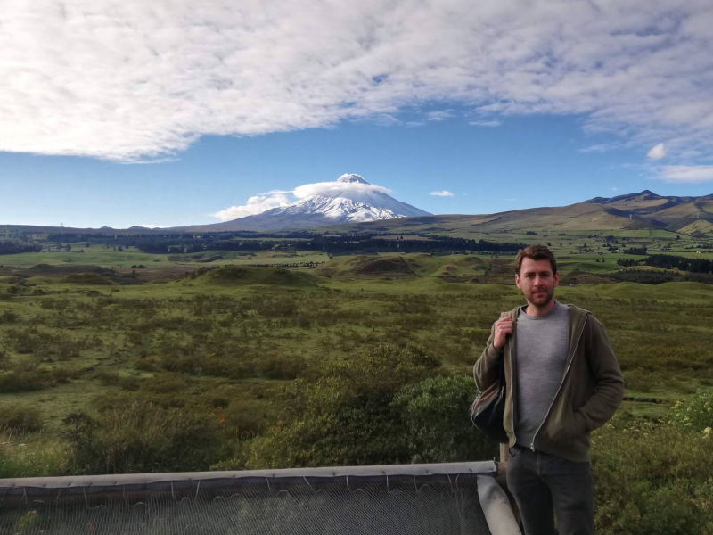
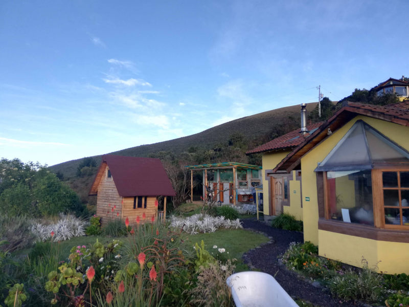
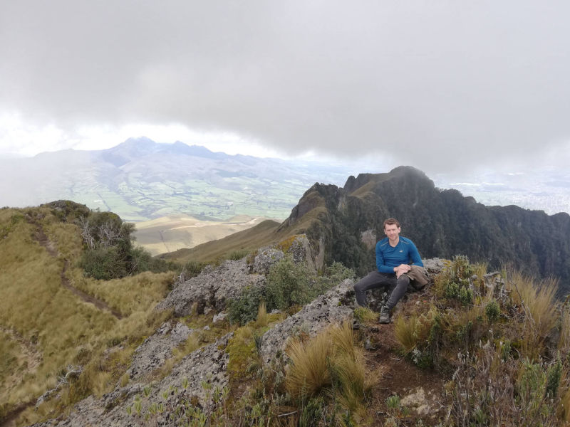
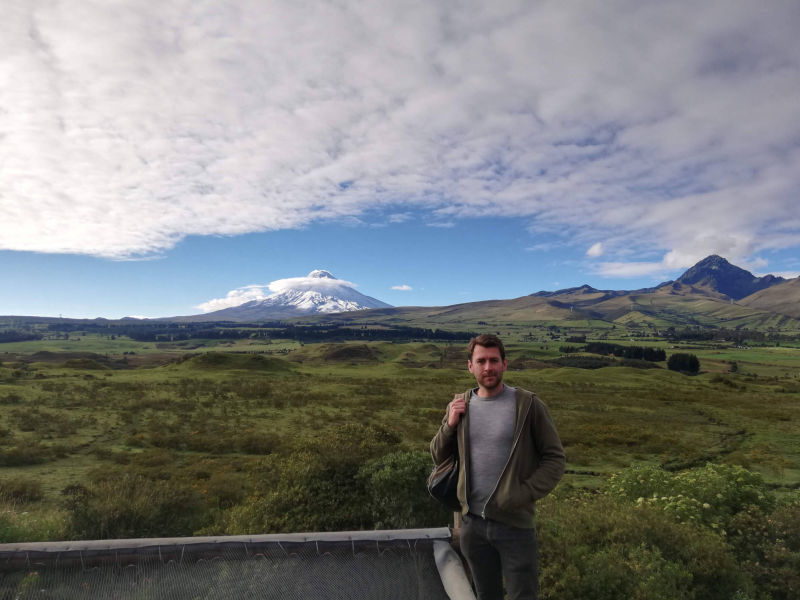
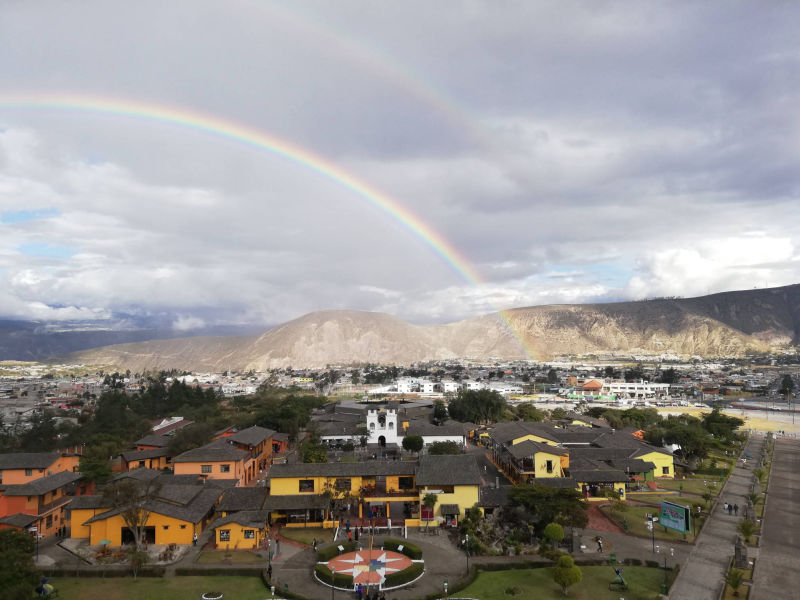
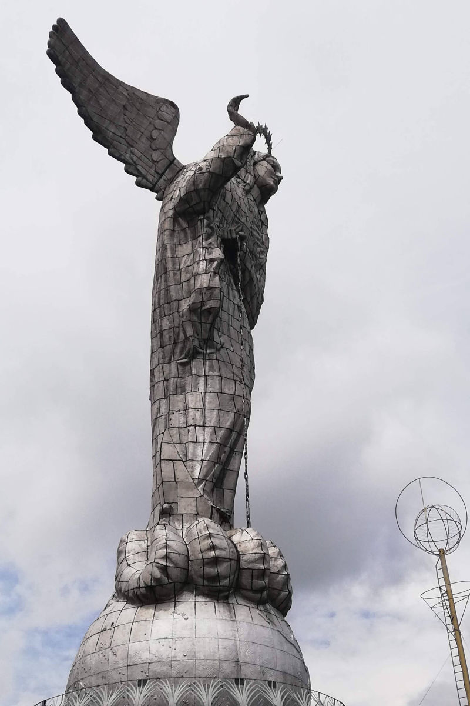
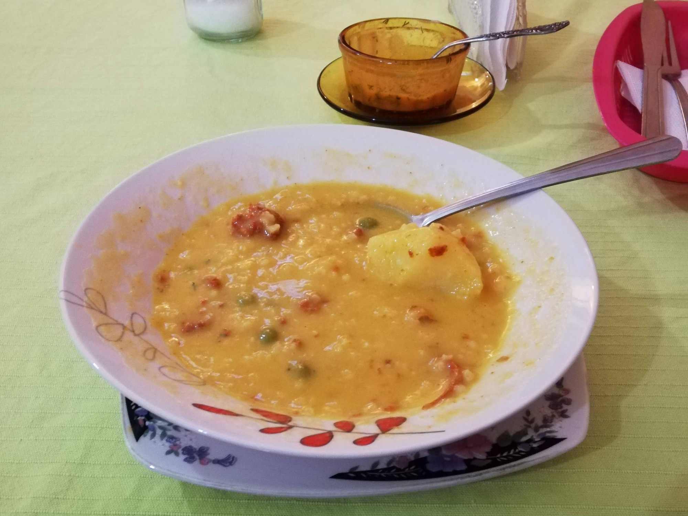
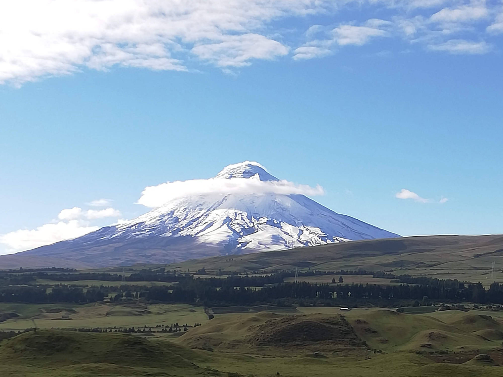
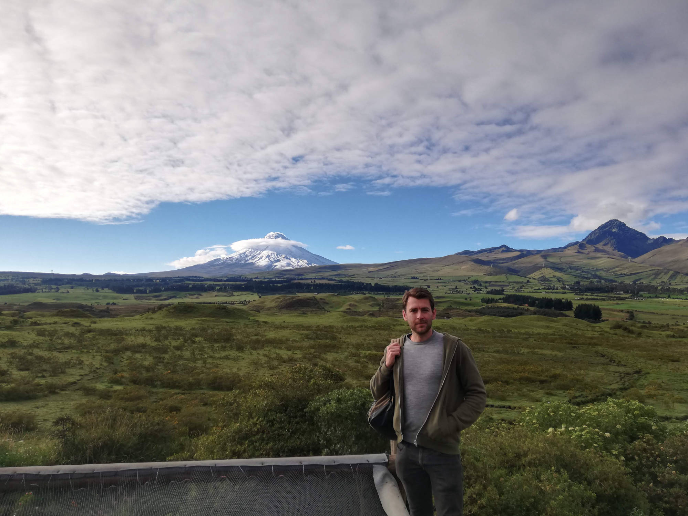

Cotopaxi
free amp templates
Locro de papa

Eerste hike

Verblijf

Hike naar de Pinchincha vulkaan
De Cotopaxi vulkaan

De Cotpaxi vulkaan 2

View vanaf Monument Mitad del Mundo

Virgen de Quito



Previous
Next
Close